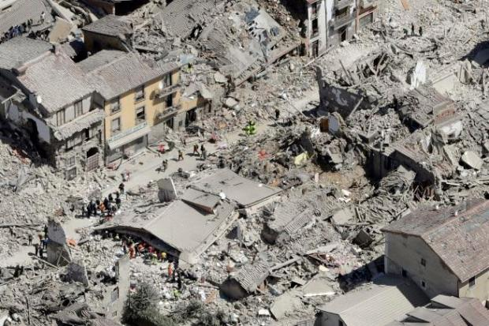

Earthquakes

Tsunamis
A natural disaster is a major adverse event resulting from natural processes of the Earth; examples include floods, hurricanes, tornadoes, volcanic eruptions, earthquakes, tsunamis, and other geologic processes. A natural disaster can cause loss of life or damage property,[1] and typically leaves some economic damage in its wake, the severity of which depends on the affected population's resilience, or ability to recover and also on the infrastructure available.[2] An adverse event will not rise to the level of a disaster if it occurs in an area without vulnerable population.[3][4] In a vulnerable area, however, such as Nepal during the 2015 earthquake, an earthquake can have disastrous consequences and leave lasting damage, which can require years to repair. Source: wikipedia
The goal of this site app is twofolds: 1) to provide a data visualization repository that will allow you to explore these natural disasters, and evaluate their frequency, and global distribution. 2) To use machine learning to make predictions.
The data used in this application was obtained from: